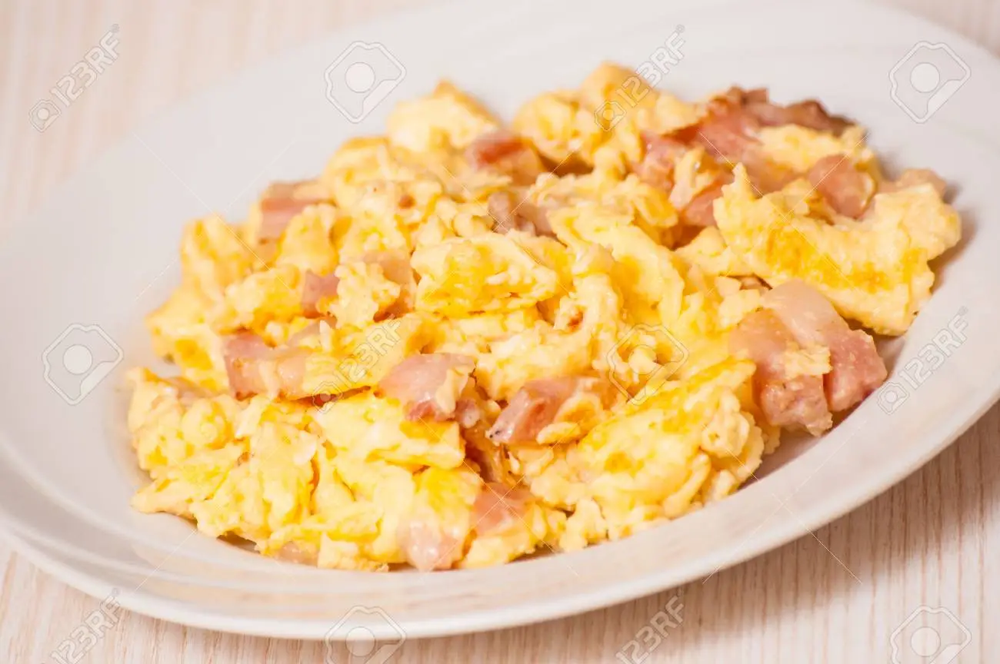

Scrambled Eggs
Delicious scrambleg Eggs to start your day like a champion
I present to you this amazing recipe of egg, ham and cheese. it's Delicious nd combine fine wih toast, orange juice, crakers and even yogurt
It is easy and fast to prepare, need just a few ingredients and will give all the energy you'll need.
ingredients
- eggs
- ham
- cheese
- salt
- butter
Instructions
- Put eggs in a bowl. Obviosly, breke it first
- add salt to taste and using a fork stir until they are homogeniosly mixed
- put a pan on the stove and add butter, wait until is totaly melted
- cut the ham in litlle cubes and put on the pan.
- add the eggs and stir continiuosly
- just litlle before serve. add cheese